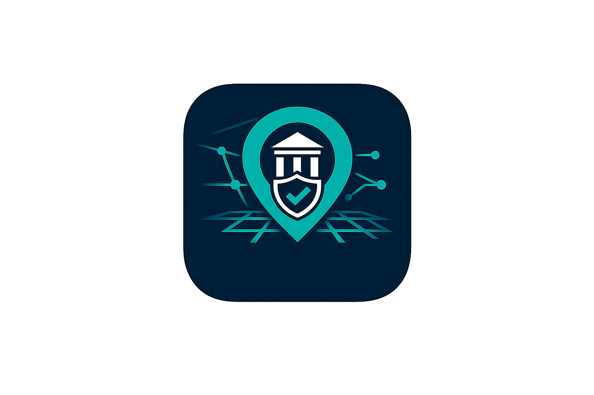

Connecting Citizens with Civic Services...
ADMIN DASHBOARD
Review submitted complaints, track live complaint statistics, update complaint status, delete records, and export visible complaint data.
LIVE COMPLAINT MANAGEMENT
Complaints are loaded from Firebase Firestore in real time. Use search, filters, status actions, and CSV export to manage records.
Loading complaints...